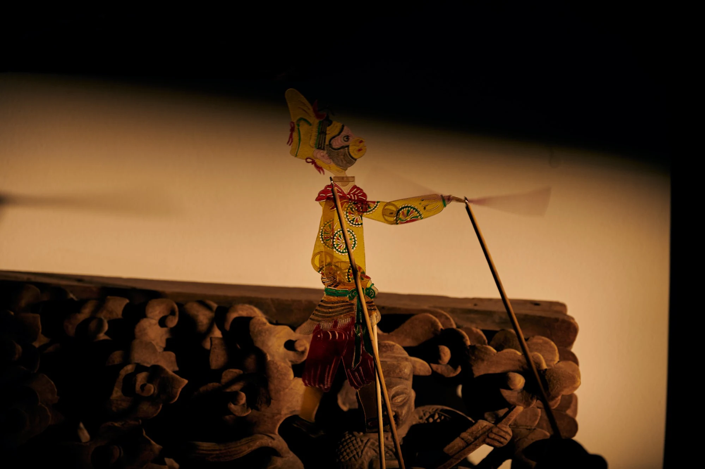
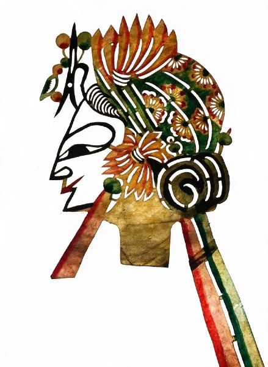
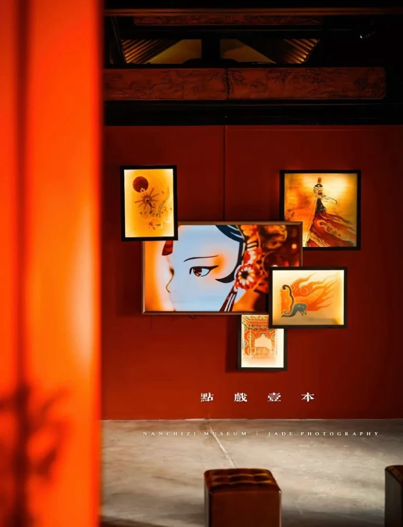
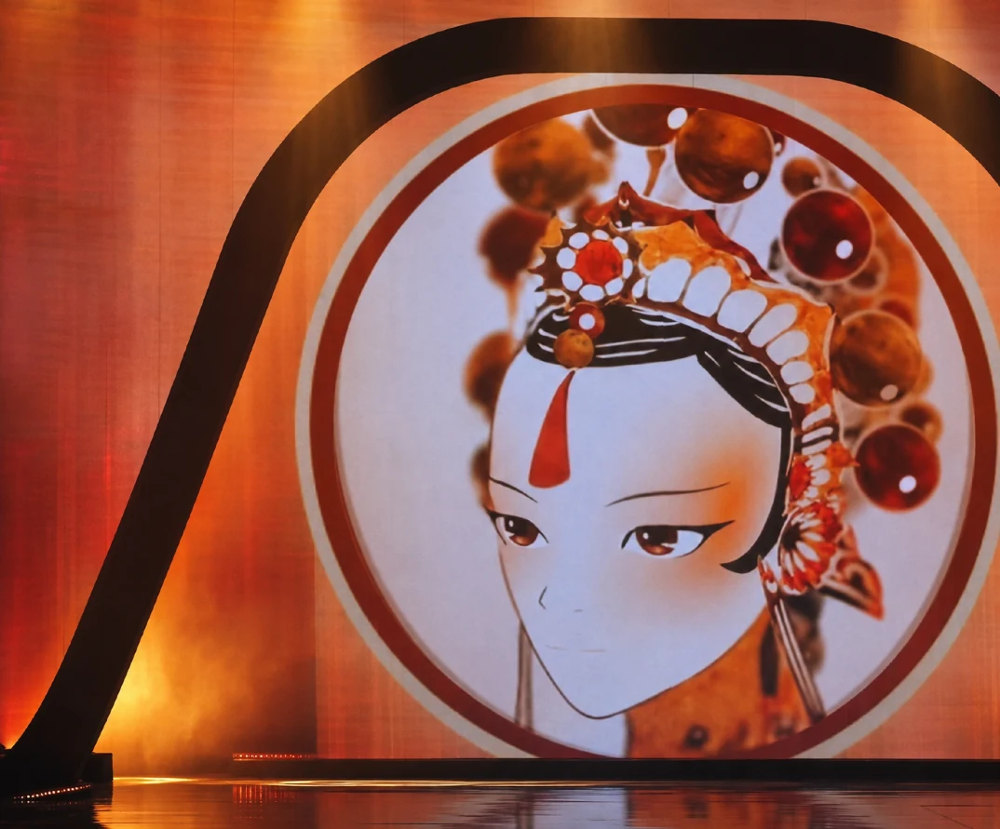
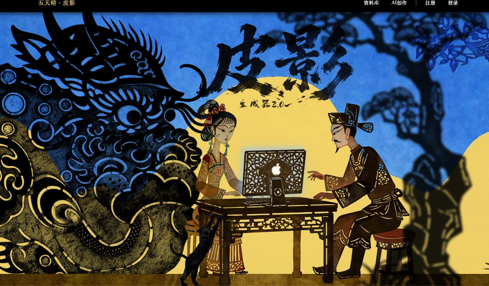
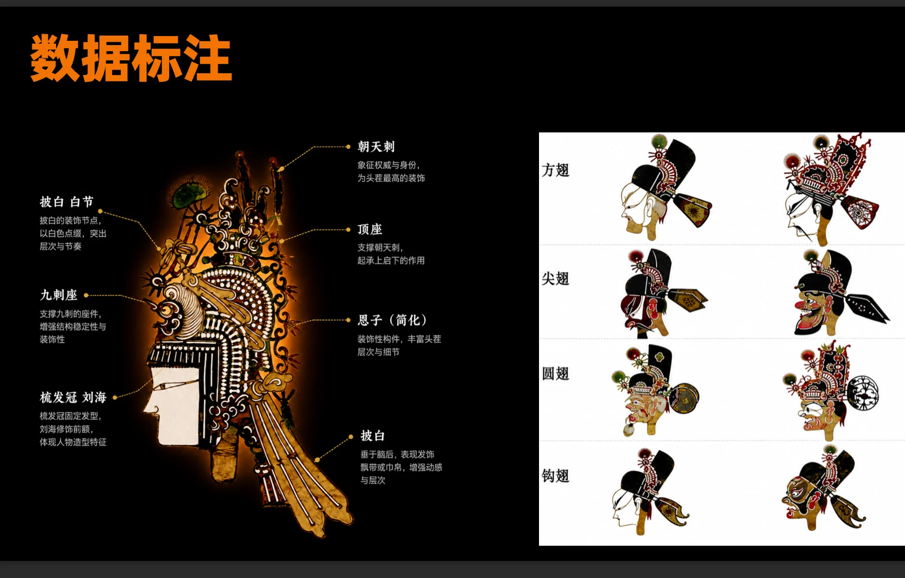
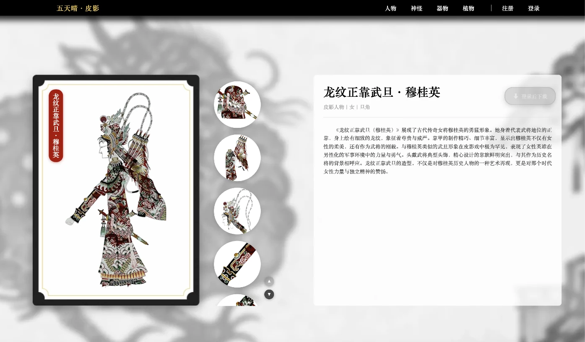
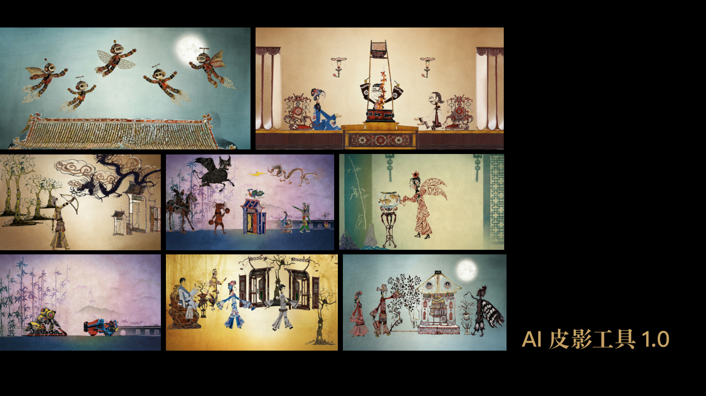
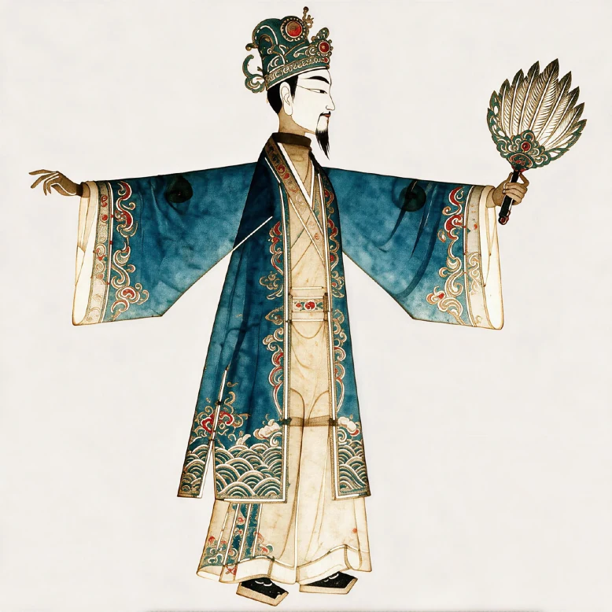
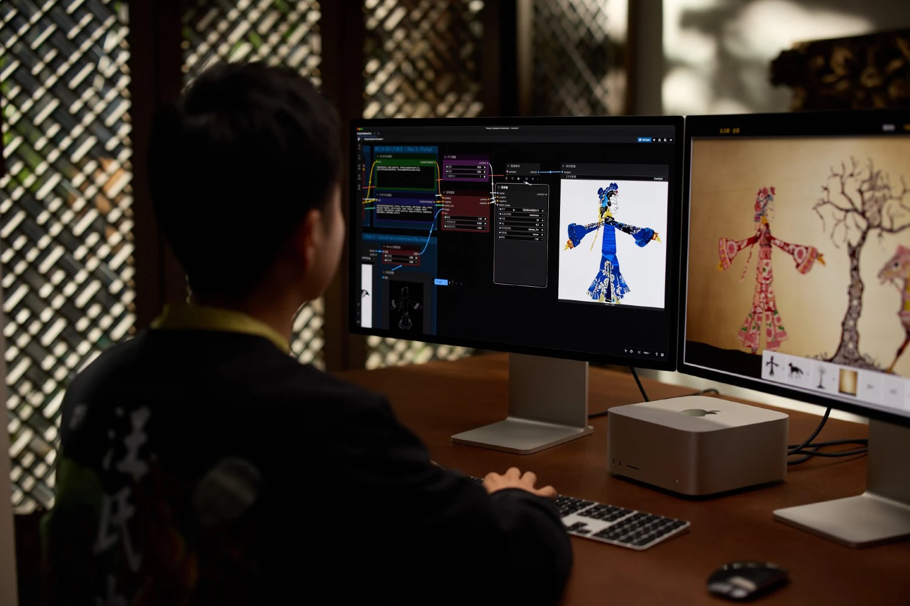

从平面到立体
围绕皮影人物的轮廓、色彩与层次，探索三维呈现的可能。

颜色、镂空、薄片、关节与表演，共同构成了皮影的独特表达。光透过材料与纹样，静止的形象便有了层次；操纵杆牵动身体，角色便进入故事。
当皮影进入数字世界，我们关注的不只是外观的复刻，也是在新的媒介里，如何延续它的结构、运动与叙事方式。

色彩不仅附着在表面，也在光的穿透中形成鲜活的视觉层次。
细密的纹饰既塑造角色，也为数字标注、检索与再创作提供线索。
关节、薄片与操纵方式，让形象从图案成为能够演绎故事的角色。
从立体形态到裸眼光栅，尝试改变观看的角度与展示的介质。传统视觉语言，也可以在新的空间里被重新感知。
围绕皮影人物的轮廓、色彩与层次，探索三维呈现的可能。
当传统脸谱进入数字影像，形象、材质与运动之间会发生怎样的变化？
让画面随观看角度产生变化，为静态纹样引入新的空间感。


AI 可以成为理解与重组视觉元素的创作入口。但对于皮影，生成一张“看起来相似”的图片只是起点。纹样来自哪里、角色结构如何组织、图案如何继续用于表演与制作，同样值得被关注。
现有探索从图像生成逐步延伸到传统纹样库与全链路创作，让素材、知识与后续制作之间建立更紧密的联系。
观看皮影形象在数字环境中的呈现与运动，理解从静态图案到动态角色的连接。
探索 AI 生成与皮影视觉风格之间的关系，尝试不同的角色、场景和叙事表达。
将创作与纹样资料联系起来，通过标注与对照，关注局部纹饰、角色结构和文化语境。
将生成、驱动与加工放在同一条创作路径中，探索数字内容如何走向可用的角色与作品。




让数字创作不止停留在屏幕上：从形象构思出发，考虑动作结构，再为实体制作与展示寻找合适的路径。
结合角色主题与传统纹样参考，探索轮廓、色彩和装饰关系；在反复比较中调整表达。
关注身体分段、关节关系与动作节奏，让形象能够在数字场景中参与表演与交互。
把图案放回材料与工艺中考量，探索镂空、连接、装配与展示之间的关系。
从界面操作中观察角色构思与调整的过程。
通过具体形象的制作演示，观察数字图案与后续加工之间的连接。
以已有的 1.0 与 3.0 视觉对照为线索，观察角色语义、纹样组织与图像细节的变化。对比不仅关乎画质，也关乎形象是否清晰、结构是否易于理解。

把皮影带入游戏、学习、艺术与实体制作，让观看者可以从不同的入口认识它。以下视频呈现现有素材中的应用探索。
让皮影形象成为场景与叙事的一部分，探索传统造型在互动世界中的表现力。
通过叠加在现实场景中的数字形象，为观察角色、理解结构提供新的学习入口。
结合影像、空间与表演，探索传统视觉元素在当代艺术语境中的表达。
从数字形象回到可触摸、可操纵的皮影，继续关注材料、结构与人的参与。

清华大学 米海鹏团队
以皮影为起点，探索人工智能、数字媒介与传统艺术之间的连接。我们期待的，不只是新的图像，更是让传统视觉语言被理解、被使用、被继续创作的可能。
回到光影的起点 ↑